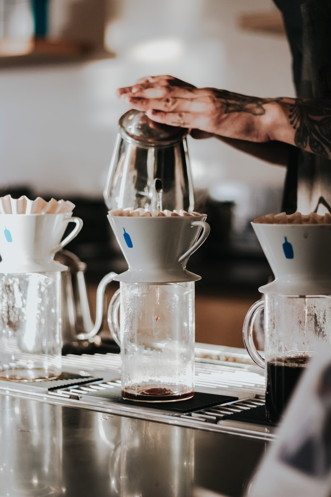

Portfolio
저만의 색깔과 저만의 방식으로 기존의 웹사이트들을 리뉴얼하여 표현하였습니다.

BLUE BOTTLE - 브랜드 아이덴티티 웹디자인
제작기간 : 2주
PC WEB
COLOR
#PMS306U
#PMS2995c
#1U
#PMS2995c
#1U
블루보틀이 가지고 있는 깔끔하고 모던한 느낌과 현대사회의 트렌디함을
보여주는 커피브랜드이지만 기존의 웹사이트에서는 브랜드의 성격이 잘나타내지않아
어떻게하면 블루보틀의 성격이 잘 나타낼수 있을지에 대해 집중하여 웹사이트를
리뉴얼했습니다.